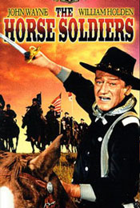

|

|

|
Year of Release: 1959
Cast: John Wayne as Colonel John Marlowe, William
Holden as Major Henry 'Hank' Kendall, Constance Towers as
Miss Hannah Hunter of Greenbriar, Judson Pratt as Sergeant
Major Kirby, Hoot Gibson as Sergeant Brown
Key People Behind the Scenes: Directed by John
Ford. Written by John Lee Mahin and Martin Rackin based on
the novel by Harold Sinclair. Produced by Mahin and Rackin.
Setting: The Civil War's Western theater,
particularly Mississippi and Louisiana.
Plot Summary: A cavalry officer is charged with
destroying Vicksburg, Mississippi's lines of supply and
communication. During the mission, he develops a friendship
with his regimental surgeon and also finds love.
Point of View: Union.
Critics' Response: Critics generally disdain
Westerns, and this one was no different, although a few
writers did have words of praise for John Ford's direction.
Awards: None.
Historians' Response: There has been little
commentary on this film by historians, largely because
Westerns rarely have any pretensions to accuracy. Its
writers were open about the fact that they were writing a
fictionalized account of events, and indeed, the movie's
plot bears only a passing resemblance to Grierson's Raid,
upon which it is based.
Budget: $5,000,000 ($37,249,000 in current dollars).
Box Office Gross: $8,000,000 ($60,191,000 in current dollars).
Source: Christopher Bates for the History 139A website
|